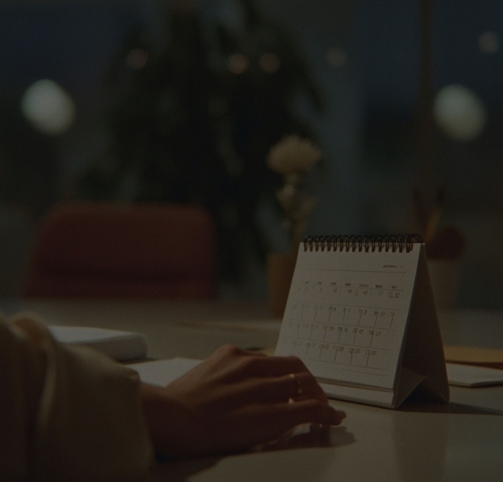

Heute: das Business im Kopf
Die Wende: Mai 2021

Katharina sitzt jahrelang im klassischen Hamsterrad. Sicherer Job, gutes Image, innerlich komplett erschöpft. Dann ein schwerer Unfall im Mai 2021, und mit ihm eine glasklare Erkenntnis.
Coaching wird ihr Weg in die Freiheit. Doch für ihr eigenes Business hat sie keinen Plan. Sie steht vor genau dem Berg, vor dem du heute stehst. Katharinas ganze Geschichte
Der Plan: sechs Monate 1:1

Heute hilft Katharina Frauen wie dir, den Berg strategisch zu erklimmen. Im Mentoring „Business is Calling“ baut ihr in sechs Monaten deine Brand-Villa.
Zum 1:1 Mentoring„Mit Katharinas strukturiertem Vorgehen hatte ich schnell Klarheit über Zielgruppe, Positionierung und Angebot. Jetzt fühlt sich alles rund an.“
Abspann
- Mit
- Katharina Niesche, Business-Mentorin
- Mentoring
- 1:1 Business is Calling, 6 Monate
- Kostenloser Guide
- Warum ich dir folge und buche
- Podcast
- Love Yourself Speak Yourself
- Fortsetzung
- deine Geschichte
Bereit, dass aus „irgendwann“ ein Datum wird?
Kostenfreien Strategie-Call buchen